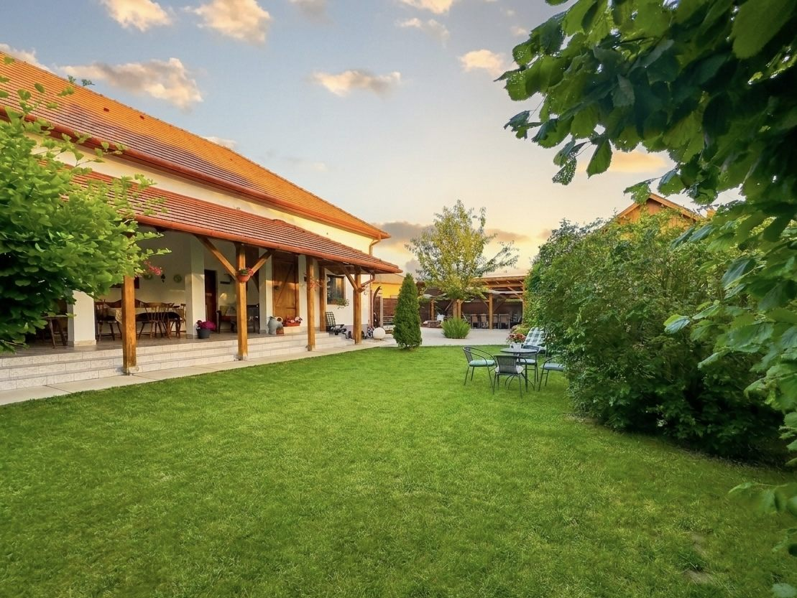

Tiszafüred · Tisza-tóTiszafüred · Lake Tisza
Ahol a vendég otthonra talál. Where guests feel at home.
Csendes vidéki pihenés Tiszafüreden: három otthonos apartman és egy gondozott kert a Tisza-tó fővárosában. A quiet countryside escape in Tiszafüred: three homely apartments and a tended garden in the capital of Lake Tisza.
- AlapítvaEstablished
- 2020
- ApartmanApartments
- 03
- FérőhelyGuests
- 14
- Tisza-tóLake Tisza
- Tiszafüred
Holdudvar Vendégház
Egy hely, ahol az eleganciát a csend és a tér adja. A place where elegance comes from quiet and space.
Tágas terekkel és személyes vendéglátással várjuk kedves vendégeinket vidéki szállásunkon, Tiszafüreden.We welcome our guests with spacious interiors and personal hospitality at our countryside retreat in Tiszafüred.
Három különálló apartman, mindegyik saját karakterrel és teljesen felszerelt konyhával — körülöttük egy gondozott kert, ahol a pihenés élménye a részletekben rejlik.Three separate apartments, each with its own character and a fully equipped kitchen — around them a tended garden, where rest lives in the details.
ApartmanokApartments
Három apartman, három karakter.Three apartments, three characters.

Telihold
Önálló kisház privát bejárattal és saját terasszal, a porta csendes sarkában.A standalone cottage with private entrance and terrace, in the quiet corner of the estate.
RészletekDetails
Félhold
A főépületben található, teljesen önálló apartman saját teraszrésszel.A fully self-contained apartment in the main building, with its own terrace area.
RészletekDetails
Holdfény
Két külön hálószoba és egy tágas, otthonos nappali.Two separate bedrooms and a spacious, homely living room.
RészletekDetails
100+éves
épületyear-old
house
Több mint 100 éves épület, modern kényelemmel.A century-old house, with modern comfort.
A felújításkor megőriztük az épület patináját, és ötvöztük a modern kor igényeivel. Sok természetes, organikus anyag: gyönyörű fa nyílászárók, eredeti diófa és rózsafa bútorok.In the renovation we kept the building's patina and combined it with modern needs. Plenty of natural, organic materials: beautiful timber joinery, original walnut and rosewood furniture.
Vendégházunk felidézi a régi korok hangulatát, amelybe egy kis modern romantikát is becsempésztünk.Our house evokes the mood of times past — with a touch of modern romance woven in.
-
100+ év100+ years
A házThe house
Egy több mint százéves tiszafüredi épület, amelynek patináját a felújítás során megőriztük.A Tiszafüred house more than a century old, whose patina we kept through the renovation.
-
2020
A Holdudvar megnyitja kapuitHoldudvar opens its gates
Azzal a céllal, hogy családok, baráti társaságok és közösségek számára is gondtalan kikapcsolódást nyújtson.With the aim of offering carefree relaxation for families, groups of friends and communities alike.
-
MaToday
Három apartman, egy kertThree apartments, one garden
Telihold, Félhold és Holdfény — körülöttük fedett terasz, pergola és a közös kert.Telihold, Félhold and Holdfény — around them a covered terrace, a pergola and the shared garden.
Közös terekShared spaces
A kert, ahol megáll az idő.A garden where time slows down.
A vendégek számára tágas, gondozott kert, fedett terasz és pergola, közös társalgó, valamint grillező- és bográcsozóhely áll rendelkezésre.Guests share a spacious, tended garden, a covered terrace and pergola, a common lounge, and a grill and cauldron-cooking area.

-
01
PihenésRest
Kerti zuhanyzó és napozóágyak a gondozott pázsiton.Garden shower and sun loungers on the tended lawn.
-
02
Közös étkezésekShared meals
Fedett terasz, közös társalgó, pergola, valamint grillező- és bográcsozóhely.Covered terrace, shared lounge, pergola, plus grill and cauldron-cooking spots.
-
03
BiztonságPeace of mind
Térfigyelő kamerával ellátott parkoló a vendégek nyugalmáért.A camera-monitored car park for our guests' peace of mind.
Környék, élményekSurroundings
A Tisza-tó a küszöbön túl.Lake Tisza, just beyond the gate.
Tiszafüred és a Tisza-tó régiója remek kikapcsolódást kínál — a vendégház jó kiindulópont a tóhoz, a pusztához és a helyi ízekhez.Tiszafüred and the Lake Tisza region offer wonderful escapes — the guesthouse is a good base for the lake, the puszta and local flavours.
Fedezze fel a környéketExplore the area-
01
KerékpározásCycling
A Tisza-tavat körülölelő kerékpárút végig vízközeli, családbarát útvonal.The cycle path encircling Lake Tisza runs close to the water — a family-friendly route.
-
02
Hortobágy
A Hortobágyi Nemzeti Park programjai: világörökségi puszta, madárles és ősi magyar állatfajták.Hortobágy National Park: the World Heritage puszta, birdwatching and ancient Hungarian breeds.
-
03
StrandBeach
Városi Szabadstrand 2,8 km — fürdőzés, vízi sportok, csónakázás a nyári napokon.City open-water beach 2.8 km — swimming, watersports and boating on summer days.
-
04
GasztronómiaFood
Helyi éttermek, csárdák és cukrászdák — halászlé, tájjellegű ízek és kézműves sütemények.Local restaurants, inns and patisseries — fisherman's soup, regional flavours and artisan pastries.

AjánlatkérésEnquiry
Kérjen ajánlatot a pihenéséhez.Request a quote for your stay.
Írjon nekünk a foglalási részletekkel, és visszajelzünk az elérhető időpontokról és az ajánlatról.Send us your booking details and we'll get back to you about availability and the offer.
- TelefonPhone+36 20 258 9544+36 20 394 2551
- E-mailholdudvartiszato@gmail.com
- CímAddress5350 Tiszafüred, Igari út 21.
- MegközelítésGetting hereÚtvonaltervDirections ↗Ingyenes, kamerával figyelt parkolásFree, camera-monitored parking